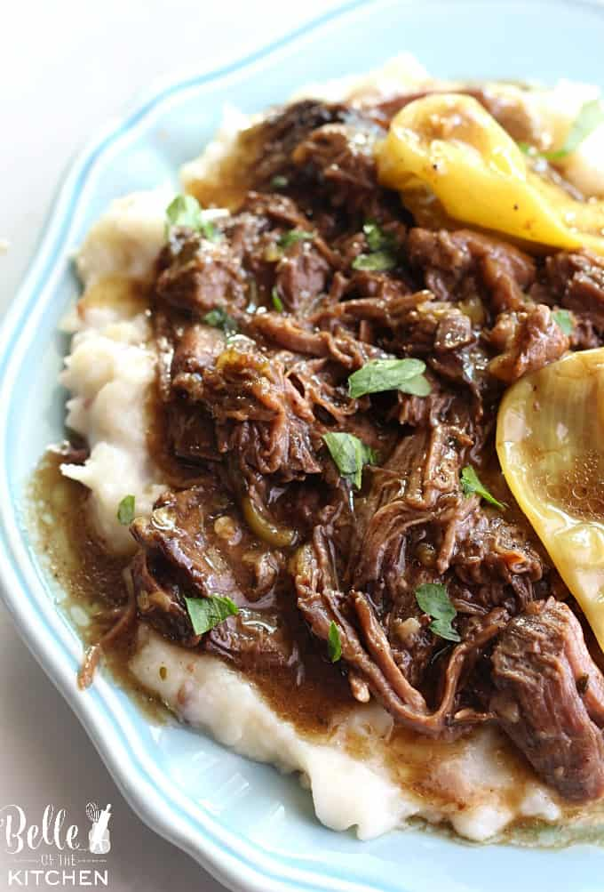

Mississippi Pot Roast
Home Page

Super easy crockpot recipe that takes almost no effort to make!
Ma 8 servings and takes about 8 hours to cook!
Ingredients:
- 1 (3-4 punds) chuck roast
- 1 packet ranch dressing mix
- 1 packet au jus gravy mix
- 1/4 cup butter
- 4-5 pepperoncini peppers
Steps:
- Place roast in the slow cooker and sprinkle the top with the ranch dressing mix and the au jus mix. Place peppers on top of the mixture and add butter
- Cook over low heat for 8 hours. Serve with noodles, rice, or mashed potatoes.